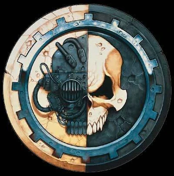

The Adeptus Mechanicus is a faction that embodies the fusion of technology and religion, with a deep focus on the pursuit of knowledge and the quest for understanding the mysteries of the universe. They have a unique aesthetic and an extensive lore that fans find fascinating, as well as a diverse range of units and play styles that make them a versatile and engaging faction to play with. Additionally, the faction's iconic units such as the Skitarii, the Tech-Priests, and the fearsome Titans, make for a visually striking army on the tabletop. Overall, the Adeptus Mechanicus is a complex and compelling faction that appeals to players who enjoy a blend of science fiction and fantasy, as well as those who appreciate the intricacies of strategy games.
